Transparent ML, integrating Drools with AIX360
Following up from a previous blog post about integrating Drools with the Open Prediction Service, in this new post we want to share the current results from another exploration work: this time integrating Drools with research on Transparent Machine Learning by IBM.
Introduction
Transparency is a key requirement in many business sectors, from FSI (Financial Services Industry), to Healthcare, to Government institutions, and many others.
In more recent years, a generalized need for increased transparency in the decision making processes has gained a great deal of attention from several different stakeholders, especially when it comes to automated decisioning and AI-based decision services.
Specifically in the Eurozone, this ties with the GDPR regulation and the requirement for explainability in the way businesses automate processes and decision making. Additionally, an “Artificial Intelligence Act” is proposed and currently under discussion at the European Commission: under the current status of the proposal several risk levels are identified. The integration of AI in the business process and decision model will likely require explainability, transparency and a conformity assessment, depending on the applicable risk level:
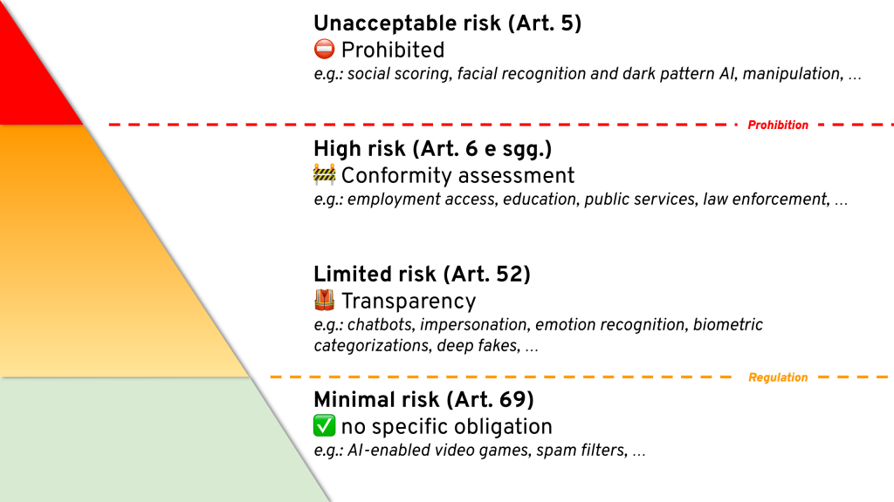
In other parts of the world, similar legislations are coming into effect or are currently being proposed.
You can read more details in this article on Medium.
With these considerations in mind, we will explore how to leverage rule induction strategies and specific types of machine learning models, with the intent of producing predictive models which can integrate with effective results into this general context.
Transparent ML with Drools and AIX360
One way to address some of the problems and requirements highlighted in the previous section is to use Machine Learning to generate specific types of models that are inherently readable and transparent.
As we will see in this blog post, a transparent predictive model can be handed over easily to the next phase as a decision model, in order to be evaluated as-is, but most importantly for the ability to be inspected and authored directly!
Comparing a Transparent ML approach with the broader general Machine Learning, we can highlight some of its characteristics:
| General Machine Learning evaluation: | Transparent ML approach: |
| All supported model types, but black box evaluation | Model can be inspected, authored, evaluated |
| Accuracy focused | Transparency focused |
| eXplainable AI complements, such as TrustyAI | Intrinsically eXplainable |
| MLOps —governed by data science | Business centric governance |
| Multiple runtimes | Potentially single runtime |
Naturally the transparent ML approach has its limitations; we will discuss alternative approaches in the conclusions of this blog post.
An example pipeline can be summarized as follows:
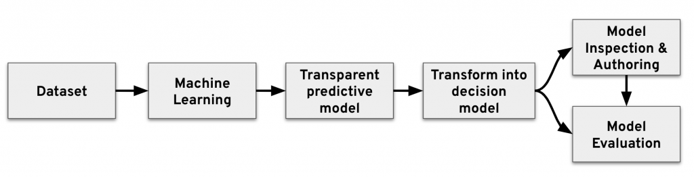
For the examples in this blog post, we will use the https://archive.ics.uci.edu/ml/datasets/Adult dataset (predicting if income exceeds $50K/yr from census data).
Let’s get started!
Rule Set induction
In this section we will make use of the AI Explainability 360 toolkit, an open-source library that supports interpretability and explainability of datasets and machine learning models.
Our goal in this phase is to generate a predictive model from the UCI Adult dataset, using Machine Learning techniques:
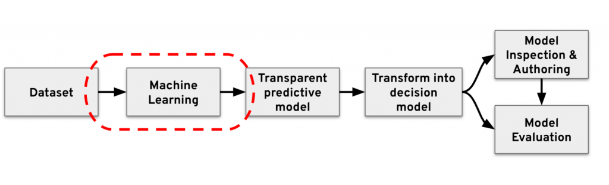
To generate a transparent predictive model, we can drive the generation of a RuleSet PMML model, as explained in the following Jupyter notebook examples at this link:
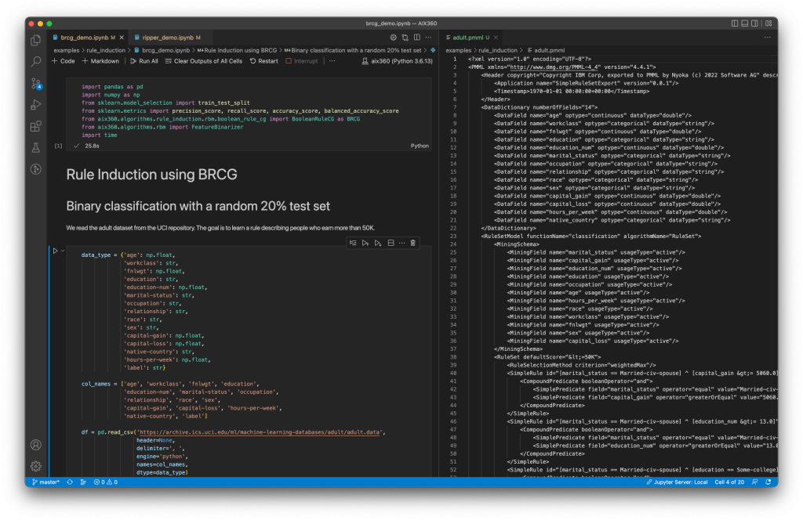
As a result of this, we have now generated a set of rules, in the form of a PMML RuleSet, which represents the transparent predictive model for the Adult dataset:
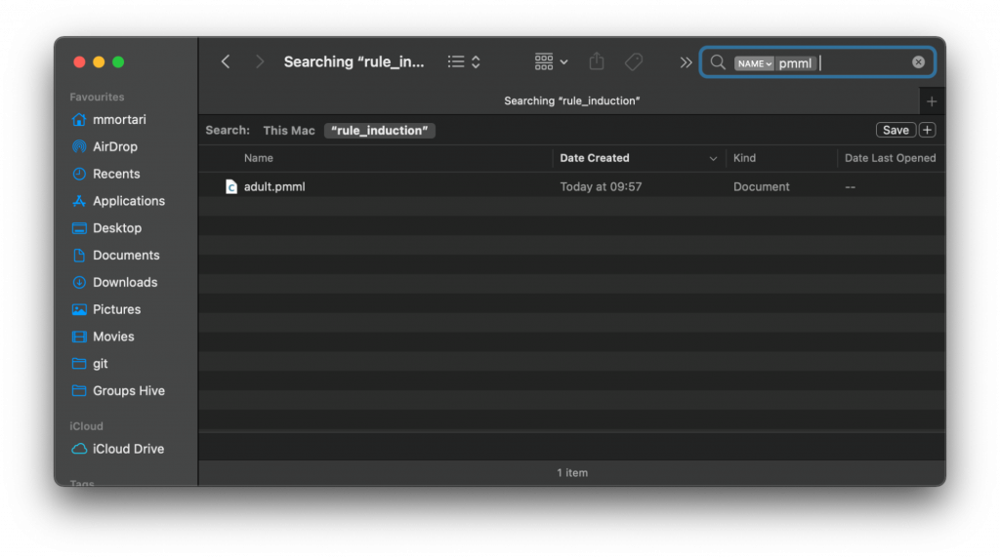
If you are interested to delve into more details about using AIX360 and related algorithms, you can check out this article on Medium.
Drools
In this section, we will transform the result from the previous steps into an executable decision model, which can also be directly authored.
Please note: in a different context, where the only requirement is the execution of predictive models in general, you can simply make reference to the PMML support for Drools from the documentation, or to integration blueprints such as the integration of Drools with IBM Open Prediction Service from a previous blog post. In this article instead, as premised, we’re interested in the result of a transparent prediction model, which can be fully inspected, authored and (naturally!) evaluated.
Specifically, we will transform the transparent predictive model serialized as a RuleSet, into a DMN model with DMN Decision Tables.
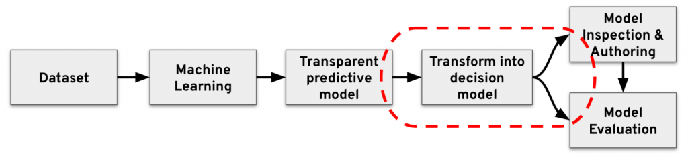
To perform this transformation, we will make use of the kie-dmn-ruleset2dmn utility; this is available as a developer API, and as a command line utility too.
You can download a published version of the command line utility (executable .jar) from this link; otherwise, you can lookup a more recent version directly from Maven central here.
To transform the RuleSet file into a DMN model, you can issue the following command:
$ java -jar kie-dmn-ruleset2dmn-cli-8.27.0.Beta.jar adult.pmml --output=adult.dmnThis will result in a .dmn file generated, which you can author with the Kogito Tooling and evaluate as usual with the Drools DMN engine!
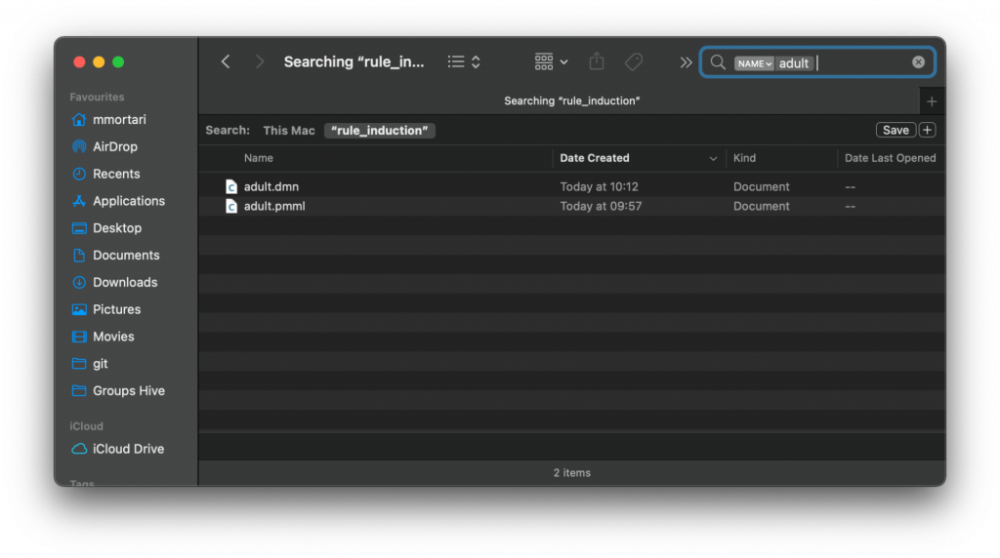
We can upload the generated .dmn file onto the DMN.new sandbox:
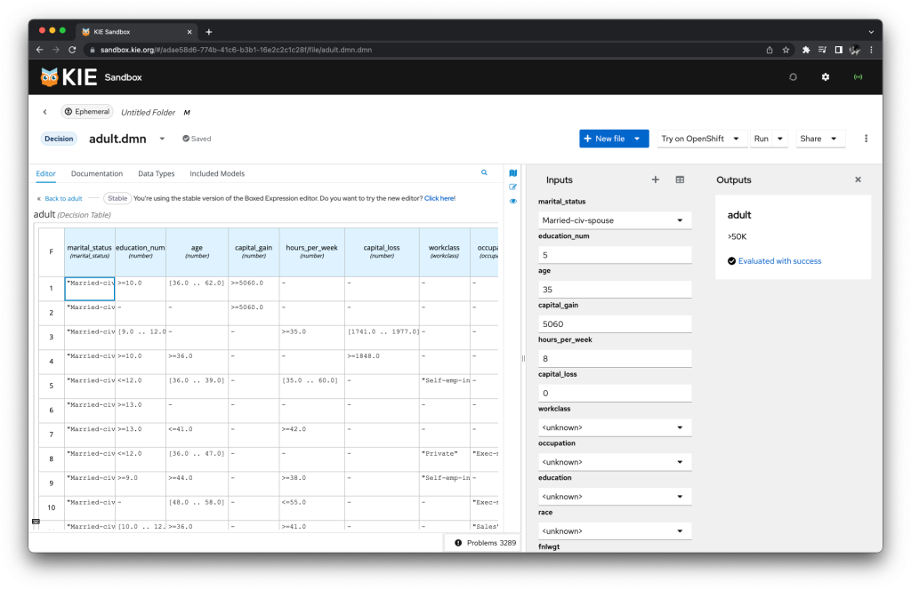
We can make use of the Kie Sandbox extended services, to evaluate locally the DMN model, as-is or authored as needed!
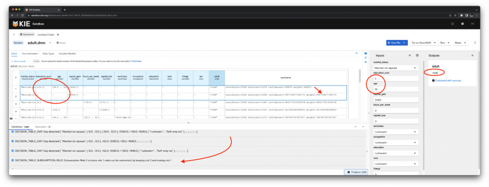
It’s interesting to note the static analysis of the DMN decision table identifies potential gaps in the table, and subsumptions in the rules inducted during the Machine Learning phase; this is expected, and can be authored directly depending on the overall business requirements.
From the model evaluation perspective, overlapping rules are not a problem, as they would evaluate to the same prediction; this is a quite common scenario when the ML might have identified overlapping “clusters” or grouping over a number of features, leading to the same output.
From a decision table perspective however, overlapping rules can be simplified, as a more compact representation of the same table semantic is often preferable in decision management.
Here it is up to the business to decide if to keep the table as translated from the original predictive model, or to leverage the possibilities offered by the transparent ML approach, and simplify/compact the table for easier read and maintenance by the business analyst.
Deploy
We can deploy directly from the KIE Sandbox:
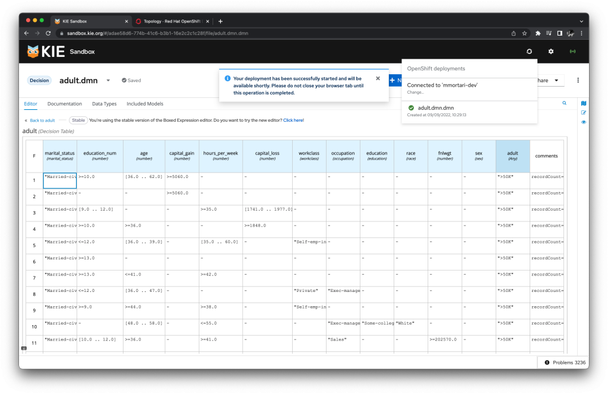
Our Transparent prediction and decision model is available as a deployment on OpenShift !
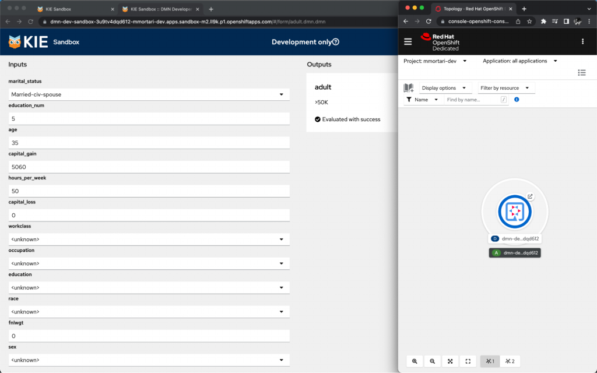
As you can see, with just the click of a button in the KIE Sandbox, our transparent ML model has been easily deployed on OpenShift.
If you want to leverage the serverless capabilities of Knative for auto-scaling (including auto scale to zero!) for the same predictive model, you can consider packaging it as a Kogito application. You can find more information in this other blog post and video tutorial.
Conclusion
We have seen how a Transparent ML approach can provide solutions to some of the business requirements and conformance needs to regulations such as GDPR or AI Act; we have seen how to drive rule induction by generating predictive models which are inherently transparent, can be authored directly as any other decision model, and can be deployed on a cloud-native OpenShift environment.
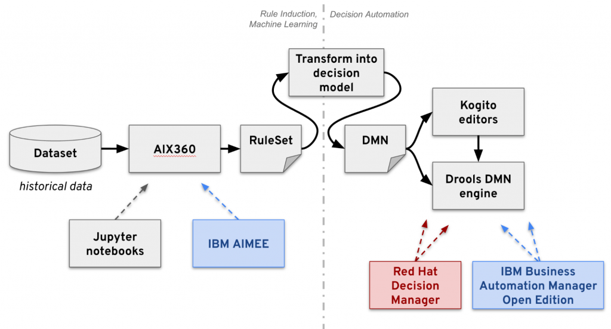
In this post, we have focused ourselves on using directly upstream AIX360 and Drools. You can refer to the above diagram for commercial solutions by IBM and Red Hat that include these projects too, such as IBM AIMEE, Red Hat Decision Manager, IBM Business Automation Manager Open Edition.
If you are interested in additional capabilities for eXplainable AI solutions, check-out the TrustyAI initiative at this link!
The Transparent ML predictive model, now available as a decision service, can be integrated in other DMN models and other applications, as needed. For example, the transparent prediction on the Adult dataset (predicting if income exceeds $50K/yr) could become invocable as part of another decision service that decides on the applicability for the requests of issuing a certain type of credit card.
Another possible integration could be to employ a transparent ML predictive model in the form of scorecards, inside a broader DMN model for segmentation; that is, first identify the applicable category/segment based on the input data, and then apply one of several score cards for the specific segment.
Don’t miss on checking out the DecisionCamp 2022 presentations on related Transparent ML topics!
Hope you have enjoyed this blog post, showcasing integration of several technologies to achieve a transparent ML solution!
Questions? Feedback?
Let us know with the comment section below!
Special thanks for Greger Ottosson and Tibor Zimanyi for their help while crafting this content.